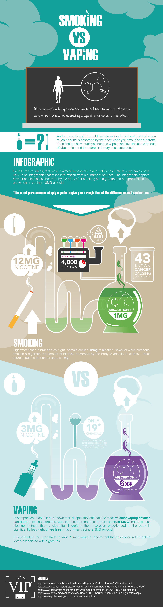

Phiz Digital Infographics
Phiz Digital can provide a single bespoke infographic or a series of pieces as is the clients requirement.
Below is an infographic produced for VIP Electronic Cigarettes and Premium Vaping.
The work compares the smoking traditional cigarettes to vaping by focusing on the absorption of nicotine and proved to be a valuable asset, informing and winning the confidence of customers - to date it has been viewed 4856 times.

Why Choose Infographics?
Infographics represent a great form of digital content that is engaging and that can convey information in a manner that is easy to digest.
They can also be a great way to help reinforce the branding of a company or product, using carefully crafted images, colours and copy to great effect - plus infographics can be used over and over because unlike written content there are no SEO issues in terms of duplicate content.
Furthermore, a high quality infographic adds another dimension to a website, blog or social media channel and makes for a refreshing change from the standard mix of photographs and text.
Used in an educational setting, infographics are an effective learning resource that can really bring a topic to life. It's like providing learners with a snackable map of facts - yummy!
Phiz Digital Infographics
If you would like to investigate the idea of investing in a bespoke infographic please contact us.